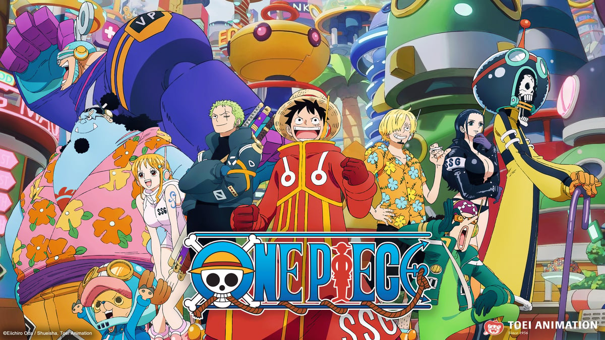

INICIO
En un vasto mundo lleno de océanos infinitos y peligrosos piratas, existe una leyenda: el "One Piece", el mayor tesoro del mundo, dejado por el Rey de los Piratas, Gol D. Roger, antes de ser ejecutado. Su último mensaje desató la Gran Era de los Piratas, donde miles de aventureros partieron en busca de este tesoro con la promesa de convertirse en los próximos reyes del mar.
Entre ellos, está Monkey D. Luffy, un joven con un espíritu indomable y un sueño inquebrantable: convertirse en el Rey de los Piratas. Luffy, que accidentalmente comió una Fruta del Diablo, tiene el poder de convertirse en goma. Con su cuerpo elástico y su corazón lleno de determinación, Luffy parte en una travesía épica, enfrentando enemigos temibles y reclutando una tripulación única con habilidades extraordinarias.
